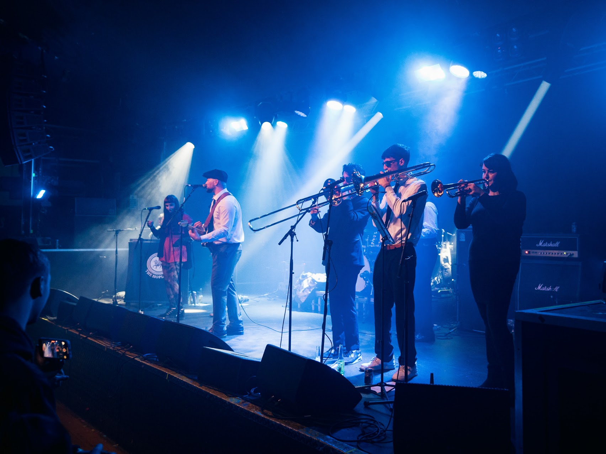

02 —
Trombone & Music

Qualifications
ABRSM Level 4 Diploma and Grade 8 in trombone, with experience performing across a wide range of musical styles and ensembles.
Jazz
Big Band
Ska
Brass Ensemble
The Hoplites
Currently performing with The Hoplites, a Nottingham-based ska band playing regular gigs across a wide range of venues.
Nottingham
Ska
Live Gigs
Open to collaboration on any music projects — don't hesitate to get in touch.